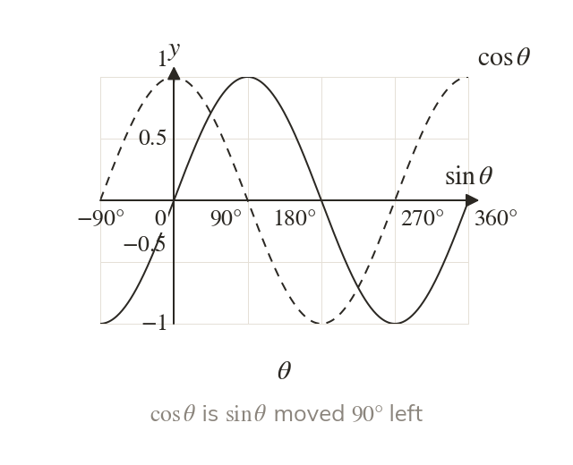
Sine and cosine are waves
The graphs of and repeat every and every value lies between and
The cosine graph is the sine graph translated to the left.
The graphs of and show how each ratio behaves for every angle, not only the angles of a right-angled triangle. Reading a period, a maximum or the number of solutions from them is what the transformations next lesson, and the equations of chapter build on.
Work down the page at your own pace. Write every answer in your book first, then click to check it.
Read each card, then follow the worked examples one step at a time.

The graphs of and repeat every and every value lies between and
The cosine graph is the sine graph translated to the left.
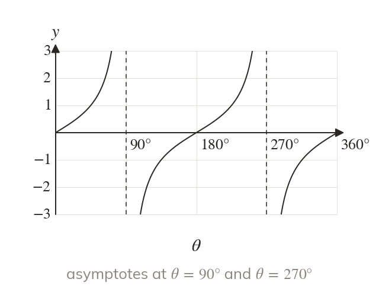
The graph of repeats every and passes through every value. It has no value at and so the graph has vertical asymptotes there.
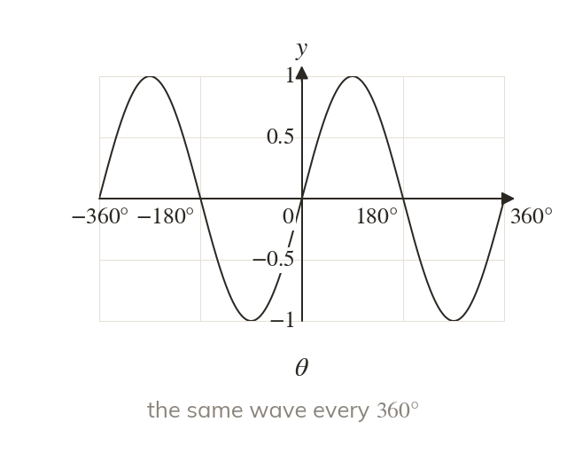
Over a wider interval each graph repeats the same shape to the left and to the right. Negative angles continue the pattern.
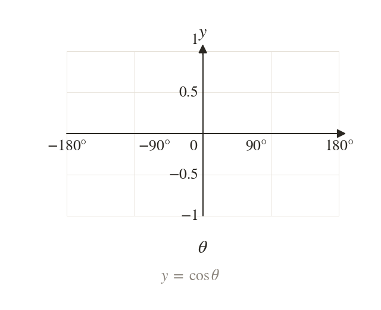
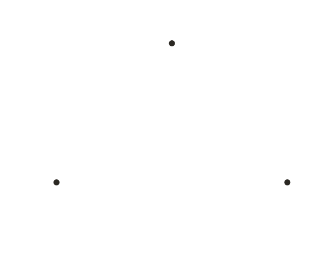
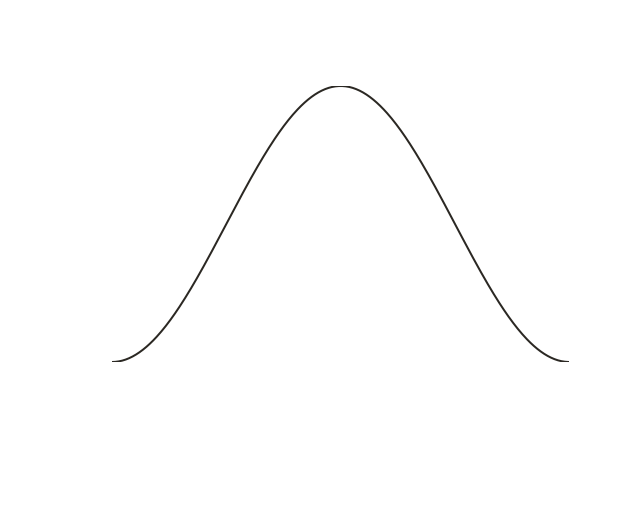
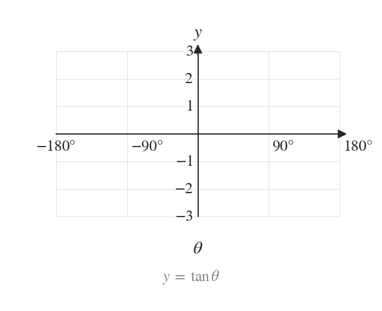
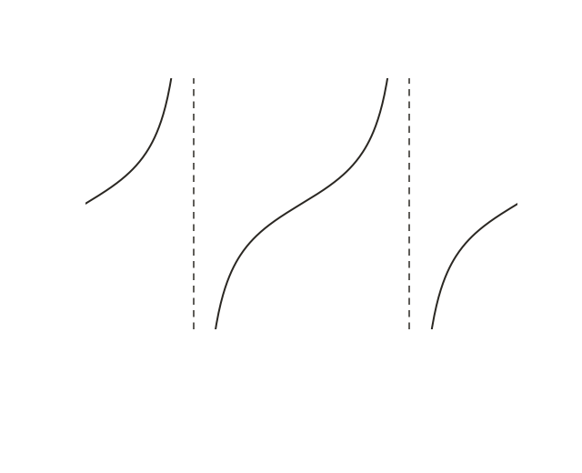
Pick an answer. If it's wrong, the feedback tells you which mistake it was.

Read each card, then follow the worked examples one step at a time.
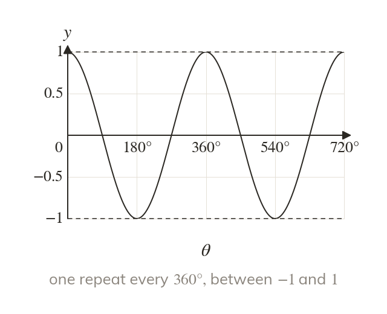
The period is the width of one repeat of the graph. For and the maximum is and the minimum is
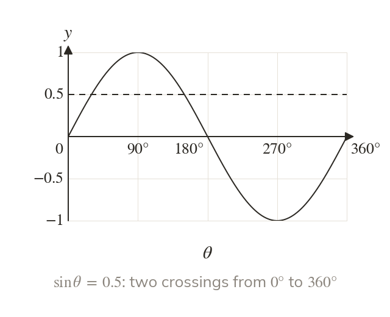
The solutions of are where the line meets the curve. Count the crossings over the whole interval.
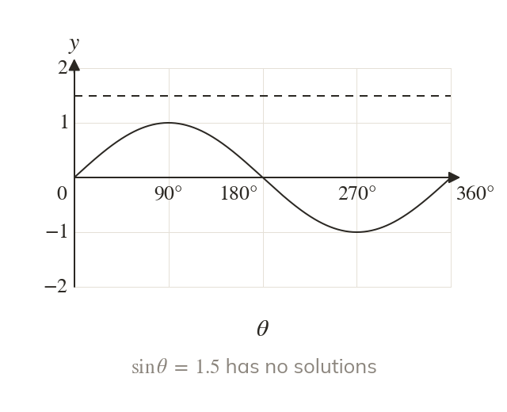
A line above or below never meets the sine or cosine curve. Then the equation has no solutions.
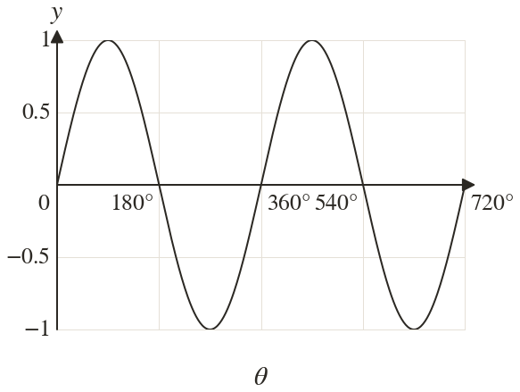
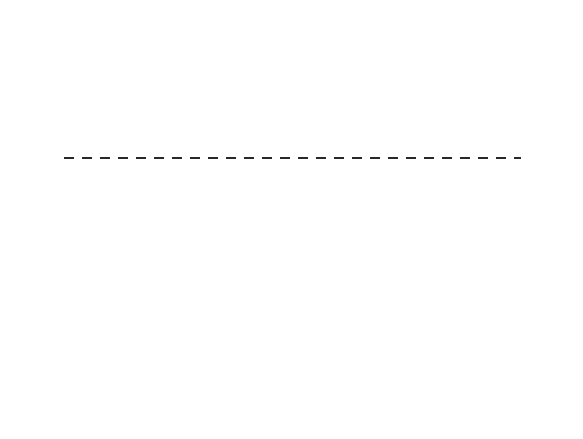
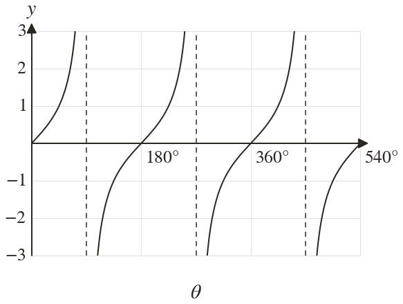
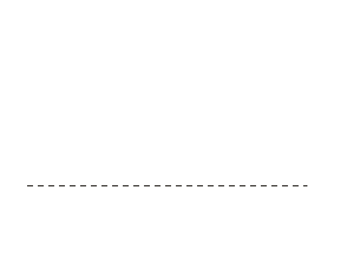
Pick an answer. If it's wrong, the feedback tells you which mistake it was.

Finished? Next lesson: 9.6 Transforming Trigonometric Graphs.
For each skill, tap the one that is true for you today. Your Revise pages start with anything you mark Not yet.
Your ratings are saved on this device only.
Log in, then search for a code to practise that skill.